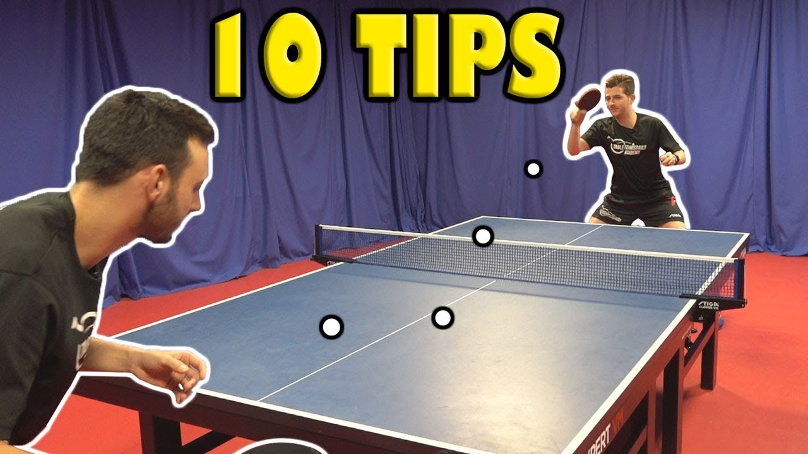
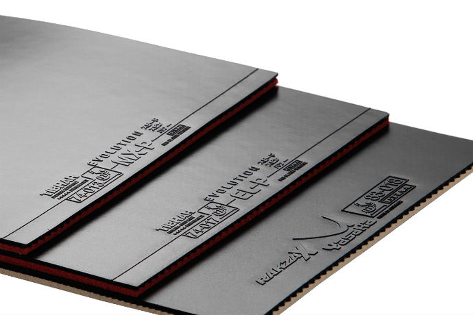
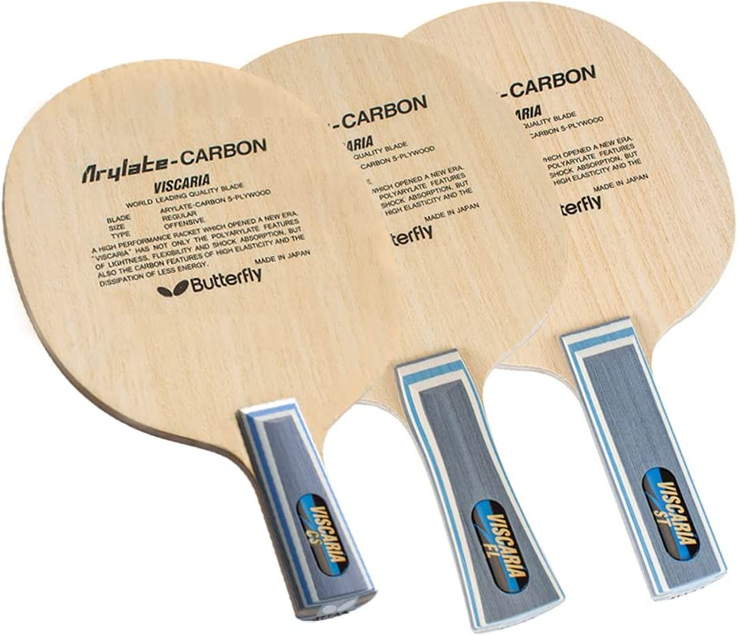
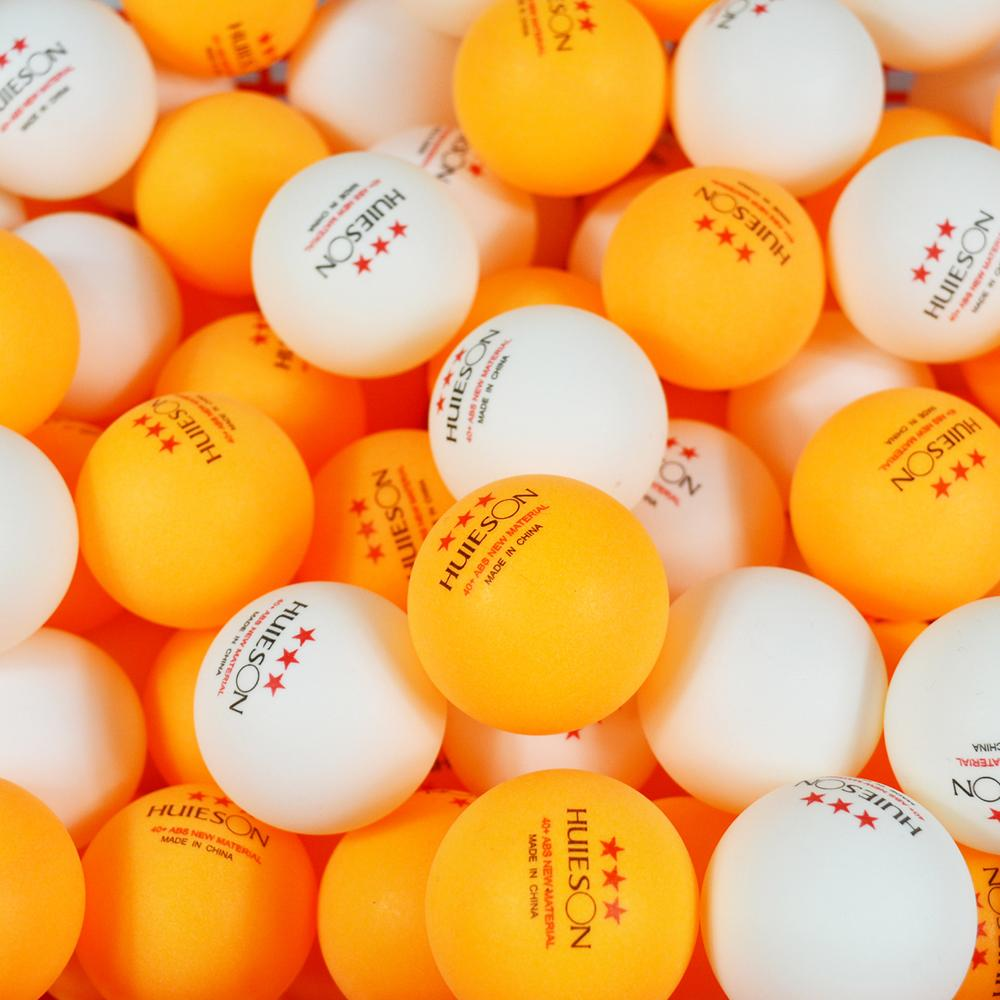
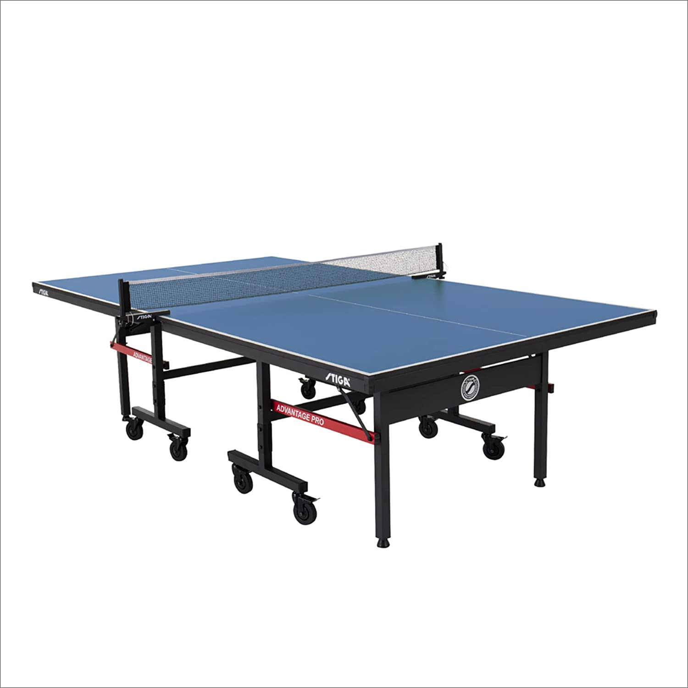

Table tennis is awesome
Table tennis is an incredibly fast game. Even if you are a beginner, you can still play well. It is extremely versatile. You can either relax and play around with the ball and have a good time, or you can experience nerve-racking matches involving stamina, strategy, technique, and spin.

All your table tennis materials here!

Most beginners will feel totally overwhelmed by the huge variety of rubbers available when buying their first custom racket.

Table Tennis blades are the “soul” of your racket. It is the only part of your equipment that you directly feel, acting as the contact between your hand and the ball.

Table tennis balls are typically divided into 3 different star ratings (1-star, 2-star and 3-star).

Table tennis equipment is relatively simple and inexpensive.
Table tennis is such interesting sport. It's fun to watch but if you actually play, you will understand how great it is.
-Ai Fukuhara
Call to action! It's time!
Sign up for table tennis by clicking that button right over there!